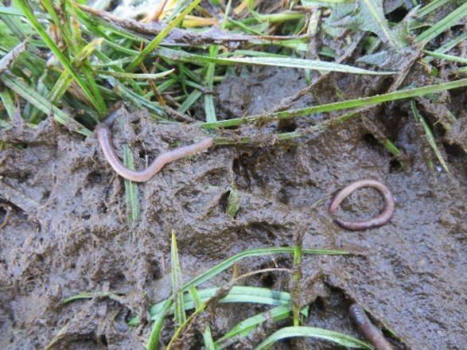

drijfmest en regenwormen
Drijfmest lijkt heel schadelijk voor regenwormen en is dat soms ook. Wanneer goed toegepast stimuleert drijfmest juist de regenwormen.
Grasland
Drijfmest stimuleert regenwormen
De wortels van gras en ouder blad zijn koolstofrijk en kunnen na afsterven dienen als energiebron voor regenwormen. Voeg je er voedsel voor wormen aan toe in de vorm van eiwitrijke verbindingen, die in drijfmest ruim voorkomen, dan stimuleert die combinatie de regenwormen. Dit is zowel bij mestinjectie als bij en zodenbemesting het geval.
Er is wel een voorwaarde. Er is geen enkele wormensoort die tegen ammonium kan. Ook andere stoffen zoals fenolen die in verse drijfmest voorkomen zijn zeer schadelijk voor regenwormen. Deze stoffen zitten in drijfmest omdat de bewaring zonder lucht plaatsvindt. Bij zodenbemesting zie je dan soms dode wormen aan de oppervlakte liggen. Dit komt vooral het geval wanneer de dieren veel stikstofrijk (kracht)voer kregen. Verse drijfmest is dus schadelijk voor regenwormen.
Is de drijfmest enige tijd in een zuurstofrijke omgeving dan worden de schadelijke verbindingen omgezet. Ammonium wordt bijvoorbeeld nitraat. De drijfmest is nu prima voer voor regenwormen geworden.

Dode regenwormen na zodenbemesting. Wanneer je na enkele weken een kuiltje in de grond graaft zie je dat de regenwormen de wat oudere drijfmest als voedsel gebruiken.
Links ligt een dode grauwe worm (bodembewoner). Rechts, op de kop, een dode rode worm (strooislbewoner, alleen de bovenzijde is rood). Alle soorten regenwormen kunnen niet tegen verse drijfmest . De pendelaars kunnen snel naar beneden kruipen.
Onderzoek waar de positieve invloed van drijfmest op regenwormen bleek is te vinden bij van Eekeren e.a., 2009 en de Goede e.a. 2003.
Het onderzoek van de Goede liet zien dat verschillende soorten wormen verschillend reageren:
| Regenwormen | Bovengronds uitrijden (5 bedrijven) | Zodenbemester (9 bedrijven) |
|---|---|---|
| Totaal aantal per m2 | 478 | 642 |
| Strooiselbewoners | 14 % | 4 % |
| Bodembewoners | 82 % | 96 % |
| Pendelaars | 4 % | 10 % |
Interessant is dat zodenbemesting gunstiger is voor regenwormen dan bovengronds uitrijden. De strooiselbewoners, die ook boven de grond ’s nachts eten halen geven enige voorkeur aan bovengronds uitrijden. Bij toepassing van de zodenbemester worden de strooiselbewoners en de pendelaars gestimuleerd. Die vinden hun voedsel vaker in de grond.
Naast de voedende kant van drijfmesttoediening zijn er ook andere factoren die ongunstig zijn voor regenwormen. De positieve invloed van drijfmest op regenwormen kan op gras ook beperkt worden door (van Eekeren e.a., 2019):
Snijdende werking bij gebruik van de zodenbemester waardoor bijvoorbeeld regenwormen worden doorgesneden.
Tijdelijke zuurstofarme omstandigheden in de grond.
Trillingen van de machine waardoor bijvoorbeeld wormen naar boven worden gedreven en daardoor blootstaan aan licht, predatoren en/of giftige stoffen in drijfmest.
Rijschade en structuurbederf waardoor regenwormen worden gedood.
Gras voor weidevogels
Stalmest die over de oppervlakte wordt uitgereden stimuleert de rode regenwormen (de strooiseleters en de pendelaars. (van Eekerene.a., 2009). Deze leven boven in de grond en komen ’s nachts ook boven de grond. Kieviten eten ’s nachts deze wormen. Uit onderzoek blijkt dat ze veel meer rode dan grauwe wormen eten dan de verhouding tussen rode en grauwe wormen in de bodem zou doen verwachten. Weidevogels met langere snavels zouden kunnen profiteren van de grauwe wormen die wat dieper in de bodem leven en door drijfmest gestimuleerd worden. Dit lijkt toch beperkt het geval. Onderzoek hiernaar ontbreekt.

De zodenbemester maakt bij gras een snede in de grond waarin de drijfmest vloeit. De machine verdicht de grond, snijdt wormen dood en ook de ammoniak doodt wormen. Na enige tijd wordt de mest toch een goed voedsel voor grauwe bodembewoners en pendelaars.
Akkerbouw en groenteteelt
Ook in akkerbouw en groenteteelt kan drijfmest gunstig voor wormen zijn, maar je moet het wel op de goede wijze toepassen.
In akkerbouw en groenteteelt kunnen in een luchtige omgeving de giftige stoffen in de drijfmest worden omgezet. Zo ontstaat voedsel voor vooral de bodembewoners. Dit blijkt uit de resultaten van meerjarige proeven.
Er is wel een beperking. Veel hakvruchten in combinatie met drijfmest als hoofdbemesting kan de bodemkwaliteit niet goed onderhouden. De aanvoer van organisch materiaal is dan te laag. Nodig zijn voldoende granen en grassen, groenbemesters, vaste mest of compost. Bij een recent onderzoek in Zuid-Duitsland kwam de problematiek duidelijk naar voren:
(xxBavaria)

Abholfing. Een van de vier proefvelden waar het onderzoek plaatsvond.
Bij onderzoek op vier bedrijven (Oberreuth, Rockingen, Aholfing en Straubing) werden naast andere meststoffen minerale mest en drijfmest vergeleken. (Burmeister, J., e.a., 2020). Dit gebeurde in een vruchtopvolging van snijmais en wintertarwe. Drijfmest had 25 tot 60% meer biomassa aan regemwormen dan minerale mest. Gemiddeld had minerale mest 18 g regenwormen per m2 en drijfmest 33 g per m2. Het waren bijna uitsluitend bodembewoners die hier voorkwamen. Naast het aantal regenwormen werd ook de aggregaatstabiliteit verhoogd en nam het aantal van andere bodemorganismen toe. Dit onderzoek sluit aan bij ander onderzoek met vergelijkbare opzet.
Teveel wormen in Noord-, Midden- en West-Nederland
Op de zavel en klei van Noord-, Midden- en West-Nederland komt het merkwaardige verschijnsel voor van schade door te veel regenwormen. Het is in bepaalde jaren een groot probleem. Onderzoek is hier nooit naar uitgevoerd ondanks vele pogingen om onderzoek gefinancierd te krijgen. Het harde bewijs dat drijfmest een rol bij het probleem speelt is er dus niet, maar de vele ervaringen wijzen er sterk op dat drijfmest een belangrijke rol speelt. Drijfmest stimuleert de grauwe bodembewonende wormen. Dit in combinatie van enerzijds teelt van te veel gewassen die veel makkelijk verteerbaar organisch materiaal achterlaten (blad van aardappels, bieten, diverse groenten) en anderzijds een verdichte ondergrond door intensieve mechanisatie geeft een kleverige bovenlaag van de grond door de vele uitwerpselen van de wormen. De bodembewerking wordt moeilijker en ook de oogst van meerdere gewassen, vooral aardappels.
Drijfmest en de verschillende soorten regenwormen

De regenwormen zijn in drie groepen onder te verdelen. De strooiselbewoners, de bodembewoners en de pendelaars.
De strooiseelbewoners en de pedelaars zijn rood aan de bovenkant omdat ze soms ook aan de oppervlakte komen. De rode kleur beschermt hen tegen daglicht, waaar ze niet tegen kunnen. De bodembewoners leven altijd in de grond en hebben aan boven- en onderzijde dezelfde grauwe of lichtroze kleur. Het verschil in levenswijze heeft veel invloed op de reactie op drijfmest.

Lumbricus rubellus, de meest voorkomende strooiselbewoner. Komt in grasland veel voor en komt ook ’s nachts boven de grond. Wanneer daar drijfmest op ligt eet hij dat toch nauwelijks op. Drijfmest uitrijden met messen, zware wielen en ammoniakhoudende mest in de bovengrond is slecht voor deze wormsoort.

A. caliginosa, de meest voorkomende bodembewoner. Deze worm komt nooit aan de oppervlakte en op gras vaste mest uitrijden heeft geen invloed op hem. Drijfmest wordt graag gegeten wanneer die al wat ouder is. In akkerbouw en groenteteelt is deze grauwe worm vaak de meest voorkomende. Bij veel aanvoer van loof van aardappel, suikerbiet e.d., verdichte ondergrond en drijfmest kunnen er zoveel voorkomen dat de kleverige keihardopdrogende grond problemen gaat geven.

De pendelaar komt ’s nachts boven de grond en vaste mest wordt daar gegeten. Drijfmest, met de zodenbemester aangebracht is ook eten voor deze worm. Vanuit de gang kan hij wat oudere drijfmest goed eten en hij heeft ook niet zo’n last van messen en zware wielen van drijfmesttanks. Hij kruipt dan mogelijk snel zijn gang in. In akkerbouw en groenteelt is hij minder vaak aan te treffen. Dat wordt anders bij veel granen en grassen en groenbemesters. Luzerne lijkt zijn lievelingsvoedsel. In de biologische teelt wordt hij daarom vaker aangetroffen. Let op de platte staart rechts in de afbeelding.
Burmeister, J., e.a., 2020. Garrestversuch Bayern. Berichte aus dem TFZ 67. Straubing, DE.
Eekeren, N. van, e.a., 2014. Regenwormen op het melkveebedrijf. Louis Bolk Instituut Driebergen.

Lees alles over de bodem van grasland en regenwomen in het in 2019 verschenen boek Bodemsignalen grasland. Roodbont Zutphen.